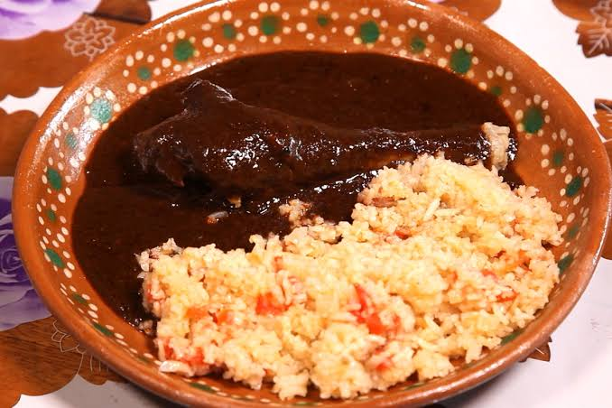

Receta 1: Mole Poblano Rapido
Ingredientes: 3 chiles anchos, 2 mulatos, 100g almendras, 1 tablilla chocolate, caldo de pollo, pollo cocido.
Preparacion: 1. Tostar chiles y almendras. 2. Licuar con caldo y chocolate. 3. Freir la salsa 10 min. 4. Agregar el pollo 15 min.
Receta 2: Atole de Cempasuchil
Ingredientes: 1L leche, 1 taza petalos de cempasuchil, 1/2 taza masa de maiz, canela y piloncillo.
Preparacion: 1. Hervir leche con canela. 2. Licuar petalos con leche. 3. Disolver masa en leche fria. 4. Vaciar todo a la olla y mover hasta espesar.
